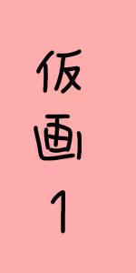

Player Name
ゲスト
さん
✏️
お知らせ
戦績
⚙️

れんしゅう
ひとりで
オンライン
対戦
ふたりで
🔔 最新情報
・オンライン対戦 実装！
・最強CPU「試験実装」追加
・戦績保存機能に対応
閉じる
設定
音量設定
言語設定
アカウント
閉じる
音量設定
BGM
効果音
もどる
言語設定 / Language
日本語
スワヒリ語（準備中）
もどる
ログイン / 新規登録
お名前（新規登録時のみ）
メールアドレス
パスワード（6文字以上）
ログイン
新規登録
ログアウト
もどる
名前を変更
決定
キャンセル
あなたの戦績
勝:
0
敗:
0
閉じる